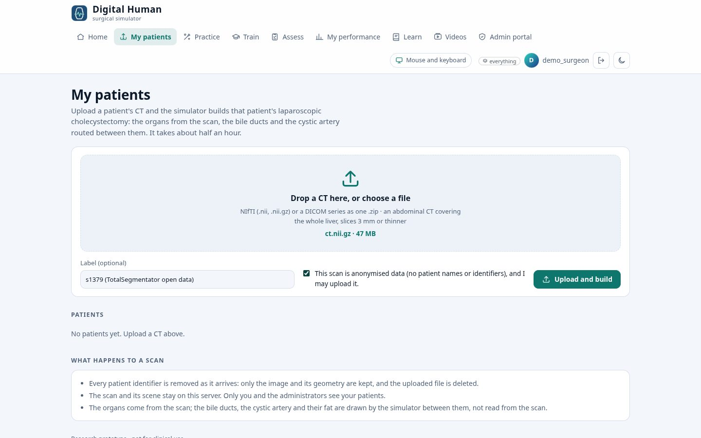
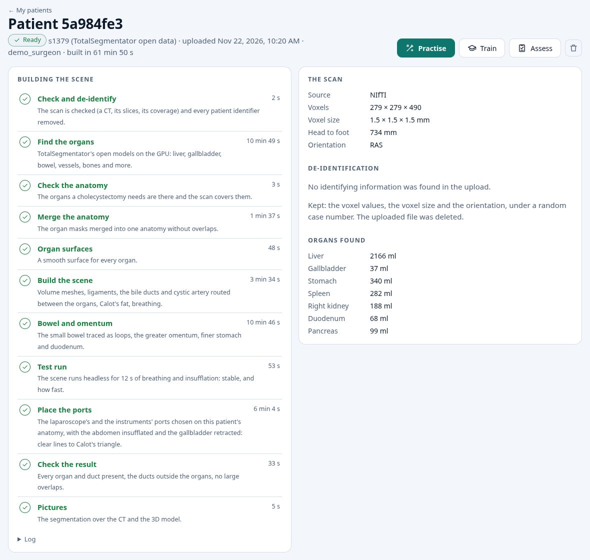
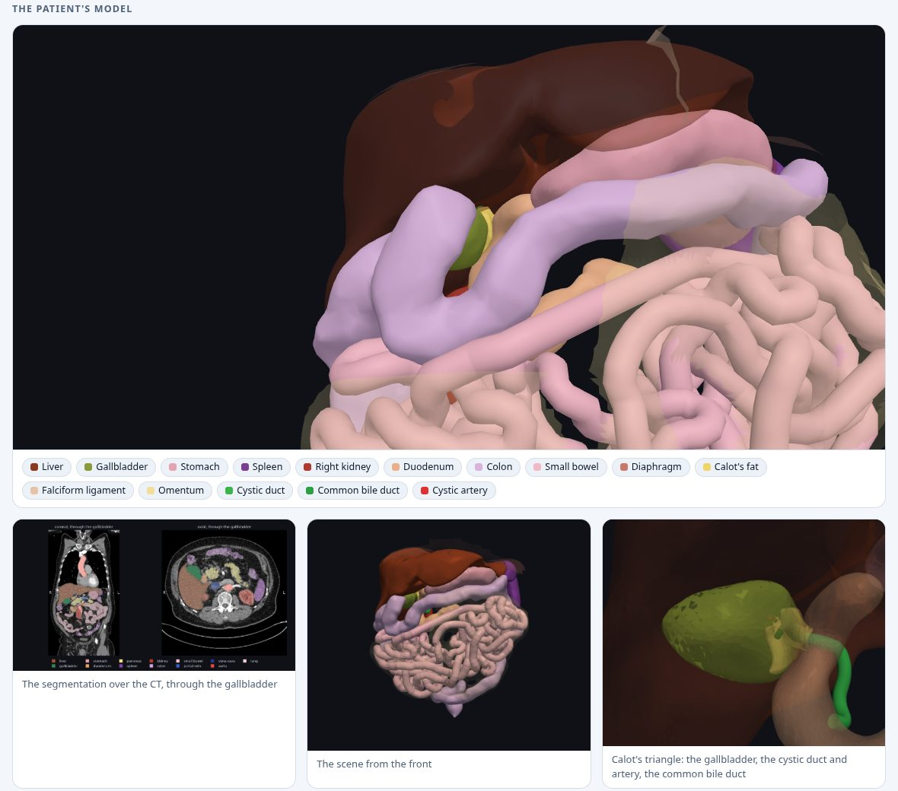
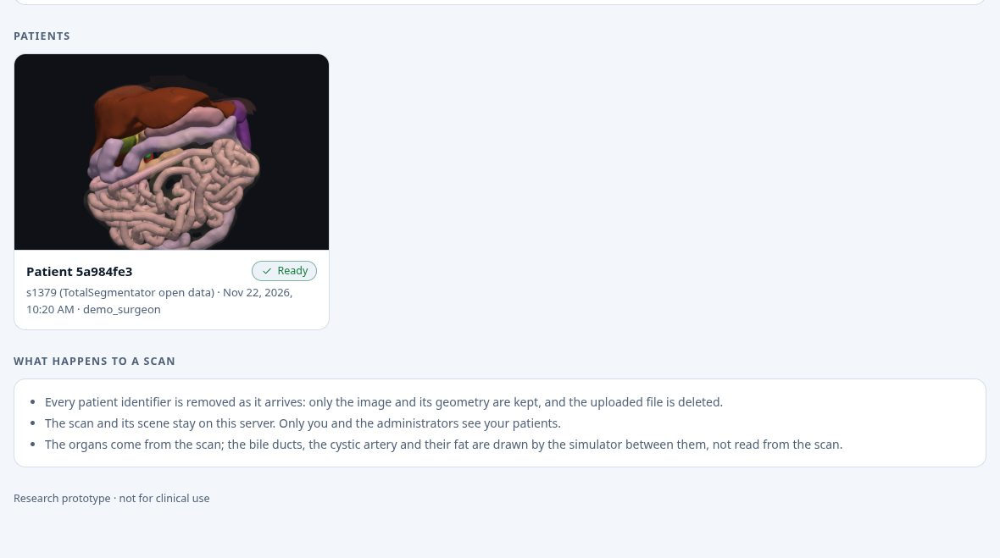

Your own patient
A clinician uploads a CT; the simulator builds that patient's laparoscopic cholecystectomy, with its own port plan, and opens it for practice, training and assessment. The whole pipeline runs on the server, one case at a time.

The steps
| Stage | What happens |
|---|---|
| Upload | A NIfTI file or a DICOM series as one .zip, with an optional label (no names) and the uploader's confirmation that the scan is anonymised data. A rejected scan says why at once. |
| Anonymise | The zip is extracted safely, the CT series chosen, validated and de-identified; scans finer than 1.5 mm are resampled once. |
| Segment | TotalSegmentator's open tasks, one at a time on the GPU, memory-capped. |
| Eligibility | Liver and gallbladder volumes; the scan covers the liver, gallbladder, duodenum and stomach. |
| Fuse, surfaces, scene | The cholecystectomy template on the patient: tetrahedral meshes, the routed bile ducts and artery, Calot's fat sheath, breathing, the falciform ligament. |
| Anatomy | The traced anatomy: the small bowel as tubes, the omentum, finer stomach and duodenum. |
| Runtime check | The scene runs headless as the simulator runs it, insufflated; an unstable build fails. |
| Ports | The patient's own port plan, chosen on the exposed anatomy. |
| Checks and previews | Required organs and chains, duct beads inside organs, overlaps; three pictures and an interactive 3D model. |


Who sees a patient
- A case is its uploader's and the admins' only; anyone else gets "not found", for its scene too.
- The uploader (a clinician) or an admin can share a ready patient with chosen trainees: it appears on their Practice and Assess pages, its scene theirs to load, nothing else of it.
- Uploads are off by default: patient data needs your own ethics approval. The identifiers are stripped on arrival either way.
